(2007-07-02 00:07:39)
在外面时间有点长，再好的宾馆也没家里好，有点想北京。明天就可以回北京了，3号还要去听一场音乐会。不过在北京也待不了几天，下周又要去一次深圳，唯一希望就是能赶上最后的荔枝，糯米糍、桂味什么的，在北京吃不到好的，不知道是否过了季节。闲着没事，就随手写一课程，希望对各位有帮助。
【韶山映山红】2007-07-02 00:07:39星期一。本文写于星期日的深夜。早睡的缠师不知道为什么“闲着没事”没有休息。】
一个对象的确立，特别是一个数学和几何对象的确立，首先要证明其存在性，如果你说的那东西根本就不存在的，那还说什么？【韶山映山红】客观存在。不是先验论的主观存在。】
例如中枢或走势类型这对象，如果不能证明其一定存在，而且是按级别存在的，那谈论就没意义了。所以，前面关于中枢的递归定义，就是解决这个问题的，是解决存在性问题。【韶山映山红】１，存在。 ２，按级别存在。】
也就是说，中枢是可以递归式地定义出来的，而该定义是可操作性的，该定义实际上是如何找出中枢的一种方法，按照这种方法，就肯定能找出定义中的中枢。【韶山映山红】找出中枢还有其他的方法。★以后研究。】
【韶山映山红】若禅精舍（陈秋明）：
其实在很多理论领域，假设一个不存在的对象，然后根据这些对象进行推演，是很普遍的情况，最典型的就是经济学里的理性经济人假设。在索罗斯那里，被称为是：明摆着是错误，却被普遍接受的东西。
理论，只有一个目的，那就是改变现实，而理论的来源，也只能是现实，是对现实对象的联系与推演，在这方面，马克思和史密斯走的其实是同样的路子，但史密斯在推演过程中加入了很多想象的内容。
对于缠论，其构建的思维方式，与之类似，从客观存在的现实中，去定义原理，再根据原理去进行数学推演。什么集大成之说、脱胎某理论之说，纯属对理论没有一点基础的理解进行的胡扯。
】
但是，光是存在性定义或定理没什么意义，所谓的可操作性，有时候只是理想化或者数学化的，例如，可以证明自然数的质数分解是唯一的，而且可以很理想化地去设计这种寻找，但实际上用最大的计算机也往往不可能完成，因此就需要变通的方法来方便实际操作。
同样道理，对于中枢和走势类型，也就有了关于不同级别的图形的研究。否则，都从最原始的分笔成交去逐步定义、寻找，那这可操作的操作也没什么操作性了。
【韶山映山红】若禅精舍（陈秋明）：
从现实中而来的理论，最终的目的要改变现实，不具备可执行基础的理论对现实而言是没有价值的。所以在对理论的应用方面，必不可少的要考虑人这个主题，是人在执行，人在用理论，那么一切都必然要服从人的能力界限，这就是可操作性。自然数是无限的，所以其质数分解也是无限的，但计算机的运算能力是有限的，圆周率是无限不循环的，但计算使用的时候不可能用一个无限不循环小数加入计算，所以一些不影响最终结果的变通，是实际操作的必须。
】
进而，就有了不同级别显微镜的比喻。而实际上，一般能得到的图，最多也就是1分钟级别的，因此，可以从这个图入手。当然，也可以从5分钟，甚至更高入手，但这就等于把显微镜倍数弄小了，看到的东西自然没有1分钟的多且清楚。【韶山映山红】缠师其实还是倾向于以1分钟为最低级别，“看到的东西”“多且清楚”。另外，缠师说过，一般的资金量，1分钟、5分钟、30分钟这三个级别基本上就涵盖了能够操作的级别，所以也不应该以5分钟为最低级别。】
再次强调，什么级别的图和什么级别的中枢没有任何必然关系，走势类型以及中枢就如同显微镜下的观察物，是客观存在的，其存在性由上面所说最原始的递归定义保证，而级别的图，就如同显微镜，不同倍数的看这客观的图就看到不同的精细程度，如此而已。所以，不能把显微镜和显微镜观察的东西混在一起了。
【韶山映山红】若禅精舍（陈秋明）：
什么级别的图和什么级别的中枢没有关系，因为这本来就是两种东西。但30分钟的中枢，其实往往都在30分钟周期图上，看起来更加直观清晰。当然这里还有级别系统的关系，走势类型的划分与线段的划分，对应的级别系统是不同的，而这种不同，其实和走势也没什么关系，只是和级别的名称有关系，例如走势类型系统里面的五分钟级别，在线段里面可能就是30分钟级别，但走势还是那走势，客观存在的走势并不会有任何变化。
】
如果我们首先确立了显微镜的倍数，也就是说，例如我们把1分钟图作为最基本的图，那么就可以开始定义上一课程说的分型、笔、线段等等。【韶山映山红】人为定义最基本的图，在此基础上人为定义分型、笔、线段等等。】有了线段，就可以定义1分钟的中枢，【韶山映山红】人为的定义1分钟的中枢，而不是“递归式地定义出来”。】然后就是1分钟的走势类型，【韶山映山红】走势类型跟着中枢走。】然后按照递归的方法，可以逐步定义5分钟、30分钟、日、周、月、季度、年的中枢和走势类型。【韶山映山红】这里才开始回到递归的路上来。】
而有的人总是不明白，例如总是在问，5分钟图怎么看，30分钟怎么看，其实，如果你选择5分钟或30分钟为最基本的图，那么和1分钟的看法一样，只不过你的显微镜倍数比较小，看起来比较粗糙而已。【韶山映山红】最基本的图是人为定义的，可以是1分钟图，也可以是5分钟图，30分钟图。】
而如果你已经选择1分钟作为最基本的图，也就是选定了1分钟这个倍数的显微镜，那么看1分钟图就可以，所以，本ID也就不断在1分钟图上进行线段的记号来示范。
那么，有人可能要问，如果用1分钟图这显微镜，5、30分钟等图还有用吗？
当然也是有用的，例如走出一个1分钟的走势类型，已经完成了，就可以在5分钟图上相应记号上，【韶山映山红】在5分钟图上标记1分钟的走势类型。】这样的一个好处就是帮助记忆，否则当1分钟图上的线段成千上万时，肯定要抓狂的。而有了5、30、日等图，就把相应已经完成的走势类型记号上，实际上，在1分钟图上需要记住的，只是最近一个未完成的1分钟走势类型。当然，由于分解的多样性，实际上需要知道的要多点，这里只是站在一种分解的角度说的。【韶山映山红】还有一个好处就是，现在的1分钟图只能看到近一两个月的，更早的就自动隐藏了，在上面画的线也看不见了。5分钟图能看到最近两年的，足够一般人做长期作业了。所以，可以在1分钟图上做分型、笔、线段和1分钟中枢的作业，然后把线段和1分钟中枢移植到5分钟图上，递归作业就以5分钟图为基础。如果及时下载了1分钟数据，在脱机浏览的情况下，可以看到更长时间的1分钟图和过去画的线。】
另外一个好处就是看MACD辅助判断时，不用对太多的柱子面积进行相加，可以看大级别的MACD图，这样一目了然。日线的背驰，其实在1分钟图上也可以看出来，只不过是需要把所有相应对比段的MACD都加起来进行处理，这样当然是不切实际的，因此就可以看日线图的MACD，在理论上没有任何特别之处，只是为了方便，如果用1分钟的MACD把参数调到足够大，效果其实是一样的，而实际上不可能，一般软件上，MACD的参数有上限限制，所以实际上也限制了日线的背驰不能用1分钟的图解决。【韶山映山红】现在的通达信软件完全可以做到在一分钟图上显示5分钟、30分钟、日线等各级别MACD，既可以通过调整参数和参数范围实现，也可以复制若干个不同级别的MACD公式以方便点选。如下图所示，分别是1分钟、5分钟、30分钟、日线的MACD共存。当然，这样在1分钟图形上显示的高级别MACD，在细节上和高级别K线图上显示的MACD稍有出入，毕竟不同级别显微镜的精细程度不同，但一般情况下能够满足分析的需要。】
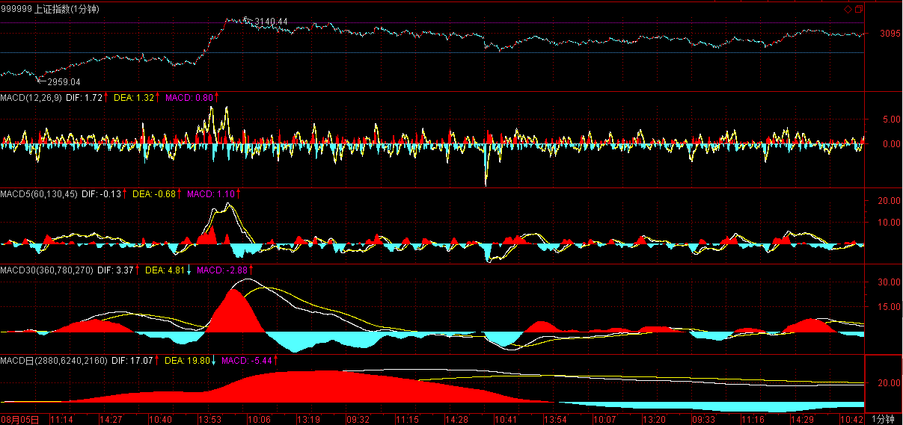
【韶山映山红】若禅精舍（陈秋明）：
对于标准线段来说，其实标志在一分钟图上并不是很方便，一方面线段本身不能被操作，标在一分钟上并没有意义，只是被看成是一个有高低点的能量块，二来线段有时候延伸颇长或很复杂，在一分钟图上并不能很好的看出力度。比较方便的方法，是在一分钟上分出线段，然后根据一分钟线段的高低点，对应的标在五分钟K线图上，这样在五分钟图上看起来会更加清晰。
而低级别的走势类型向高级别走势类型递归的过程中，标志的位置，往往是暂定的，例如一个30分钟走势类型还没有明确走完，那么现在标注的地方，在后续走势走出来之后，经常可能需要根据多义性改变走势结束的位置，这些都是当下的，也就是根据当下的客观走势，进行灵活选取。
】
有人可能又要问，为什么5分钟图上不记号5分钟的走势类型？【韶山映山红】在5分钟图上标记1分钟的走势类型。不记号5分钟的走势类型。】5分钟的走势类型，
因为，在大级别图上记号次级别的走势类型有一个好处，就是能让你清晰地看到该级别的中枢和走势类型是如何形成的，这样会更直观。【韶山映山红】次级别的走势类型，相当于本级别的线段。】在5分钟图上记号1分钟的走势类型，能清晰地看到5分钟中枢和5分钟走势类型是如何形成的，会更直观。】
当然，如果在5分钟图上，你愿意记号30分钟甚至年线的走势类型也没什么，这是个人爱好问题。如果你有超强的记忆和分析力，甚至就在1分钟上记号就可以，如果你更牛一点，对图形过目不忘，像计算机一样自动就可以分类合并，那你在1分钟图上连记号都不用了。
说点更实际的问题，一般人面对一只股票，不可能就先看1分钟图，大概都是先从日线，甚至周、月、季、年入手，这样等于先用倍数小的显微镜，甚至是肉眼先看一下，然后在转用倍数大的，进行精细的观察。【韶山映山红】先宏观，再微观。先知其然，再知其所以然。】
因此，对于大级别的图，上一课中的分型、笔、线段等同样有用，不过，一般这个观察都是快速不精细的，所以大概精确就可以，【韶山映山红】“快速不精细的”，“大概精确”，也就是说，正确性也要打折扣。】而且，一般看图看多了，根本就不需要一步步按定义来，例如，打开日线图，1秒钟如果还看不明白一只股票大的走势，那就是慢的了。【韶山映山红】快速、不精细，大概精确，不需要一步步按定义递归出来。】
基本上说，如果图看多了，成了机械反应了，一看到可搞的图，就如同看到可搞的面首一样。一见钟情，科学研究说大概不需要1秒，股票如同面首，如果不能1秒之内一见钟情，估计这股票也和你没什么缘分，最多就是有缘无分空折腾了。【韶山映山红】前提是具备了这样的能力。】
【韶山映山红】若禅精舍（陈秋明）：
读图，是一项基本能力，这能力无法通过看书获得，只有不断的复盘静态图形，头脑中储存的样本数量足够多了之后，大脑会自动归纳出几种分类，这才是读图的基础，显然这个样本数量每个人可能都是不同的。大量的图形样本的存储，是每一个操作者都必须的事情，好的走势其实就那几类，细节可能不同，但大的结构是类似的。一个新手可能看完整个3000多股票要四个小时甚至更多，熟练了之后可能只要一个小时。
】
别觉得本ID整天把股票和面首联系在一起有点不太地道，但人这身体都是从性而来，股票的道理和性的道理没什么区别当然也没什么可奇怪的，这道理在前面的课程里已经说过。
如果，你能把你的性能量转化到股票上，有了那种一见钟情的直觉，那么就算是有点入门了。而前面的理论分析，最终还是要归到这种直觉上去。【韶山映山红】把理论分析做到直觉的程度。】说得更直接一点，例如在419这种事情上，无论男女，其实决定是否419，都是在1秒内决定的，股票同样，是否和股票419，也一样。
当然，有些419让后悔终生，有些让你怀念终生，这和股票是一个道理。而真正的419高手，就是一眼就要把一个人给看透，而且知道自己需要什么，该要什么，什么不该要，要了的要甩得开，如雁过长空，否则就不是419了。股票也一样，股票的走势如同面首在搔首弄姿，一眼要看穿其把戏。【韶山映山红】真正的高手不只是秒图，还要能看透，而且能掌控。】
当然，股票比面首可爱的地方在于，面首的搔首弄姿只有一个方向，而股票有三种可能的状态，【韶山映山红】上涨，下跌，盘整。】这也决定了，面首面首是有厌倦的时候，而股票股票则不一定。
【韶山映山红】若禅精舍（陈秋明）：
这种直觉的组成部分，是可以量化的，形态、结构、阶段、K线、均线、成交量等因素都可以量化而有方向新的结合进来，这样有清晰目的的复盘，会比无重点的复盘省去大量时间和精力。而所谓直觉，从来都不是一种玄妙不可解释的现象，只是有很多细节你的大脑知道，但主观意识上不一定意识到而已。
】
但在没有这看破一切的一眼前，就别把自己当情圣了，老老实实在家里抱孩子吧，花心萝卜是需要功力的。
股票也一样，没有这超越的直觉，还是老老实实去分析，在大级别图粗略选定攻击目标后，就要选好显微镜，进行精细的跟踪分析，然后定位好符合自己操作级别的买点建仓，按照相应的操作级别进行操作，直到把这股票玩烂、直到厌倦或者又发现新的更好的可玩弄对象为止。
而站在纯理论的角度，没有任何股票是特别有操作价值的，中枢震荡的股票不一定比相应级别单边上涨的股票产生的利润少。
只有坏的操作者，没有坏的股票。
股票只是废纸，本质上都是垃圾，如果技术、心态不到位，任何股票都可以让你倾家荡产。
当然，对于小资金来说，一定要选择股性好的股票；而对于大资金来说，股性是可以改造的，就如同没有面首是不可以面首的，只是代价不同而已，股票也一样，任何股票的股性都可以被改造，只不过需要的能量不同而已。【韶山映山红】坐庄要控盘，股性改造不控盘也可以利用人性因势利导，更符合现在的时代。缠师一方面说没有庄家，一方面又说股性可以被改造，最终都是一个能量问题。能量，才是走势的根本。】
【韶山映山红】若禅精舍（陈秋明）：
人能弘道，非道弘人。是人在炒股，人在用理论，对投机来说，有波动就是好的，但这波动需要人去反应与执行。而对于小资金来说，股性好的股票才是战场，这是对小资金的特点来说的，对十万二十万的资金来说，学巴菲特一年30%最多算是理财，在股市里这种资金应该追求的是爆炸式增长。这是很多散户意识不到的一点，短线、活跃股、暴涨或者频率高的正常上涨，这些才是小资金该干的事。
】
不写了，已经又一天开始了，本ID也要洗洗睡了，先下，今天收盘后解盘见，然后本ID晚宴后赶最后的班机回北京，归心似箭，周二，盘就可以在北京看了，再见。
[匿名] 新浪网友
“一年去匆匆，又见荔枝红”。继中熟种之后，迟熟的“糯米糍”又上市了。它那种“绛纱为衣玉为肌”的芳容，令许多对荔枝情有独钟的食客为之倾心不已。
岭南是荔枝的故乡，栽荔枝已有二千多年历史。在晋代荔枝只有四种，到宋代增至二十种，至今已发展到一百三十多种。据一八二六年吴应逵所著的《岭南荔枝谱》论述，不同品种就有不同的风味。但以明代原产于番禺南岗北村的糯米糍（又名水晶丸）最为可口。被专家誉为“荔枝之王”，列入世界“果中极品”的名册。从历代史料来看，早在唐代用飞骑运送荔枝博取杨贵妃欢心的唐玄宗，以及为日啖荔枝三百颗而愿长作岭南人的苏东坡，恐怕都还未尝过糯米糍的风味哩！
糯米糍之所以得人喜爱，皆因它具有非凡的特色。它果形匀称，皮色鲜红，每五百克约有二十多个。特别是果肉肥厚，肉质润滑，核细如米，入口香甜，含糖量高达百分之十五以上，比其它品种都蜜味得多。著名作家秦牧先生在生前曾以“果大、核细、肉滑、汁多、浓甜”十个字来概括糯米糍的天生丽质。
对于各种荔枝的风味尽管萝卜白菜各有所爱，但擅长品味的食客认为，颇负盛名的“桂味”肉质爽脆，甜而不腻，可惜果头较细，核子有大有小，产量不高。昔日曾富有神话色彩的“增城挂绿”，汁不外流，甜中带酸，核子太大，其正宗的母树已枯萎过半，令人难得一尝。至于出产较多的“黑叶”、“妃子笑”等虽皮薄肉多，但吃来缺乏韵味。据观察，糯米糍荔枝的产量很不稳定，不但常有大小年现象，而且在收获前还会出现落果、裂果和枯果，严重影响质量。故许多喜食荔枝的人，若想饱尝一顿糯米糍荔枝实在并不容易。由于它属迟熟品种，每年总是姗姗来迟，只好作为压轴戏出场，粤人比喻它是“好蜜寻归底”，最终都会令人吃得开心，赞不绝口。故在盛产糯米糍的珠江三角洲各地，民间曾流行有“趁墟不买荷叶饭，拣食先寻糯米糍”的谚语。
有些长者多吃了荔枝会感到有点消化不良，喉部干燥。我的经验是吃一两次咸鱼头煲豆腐汤，或者咸鱼蒸猪肉，就可立即化解，很快恢复健康，请君不妨一试。
2007-7-2 00:26
2019-05-04
2019-06-24
2019-05-07
2019-05-16
2019-07-24
2019-08-15
(2007-07-02 15:32:58)
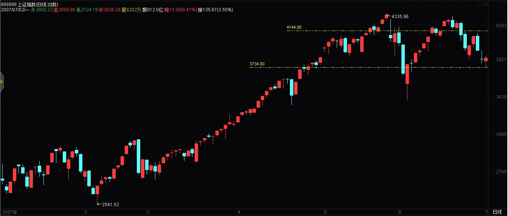
今天的走势，简直是标准教科书，连这都看不明白，你要严重补课了。
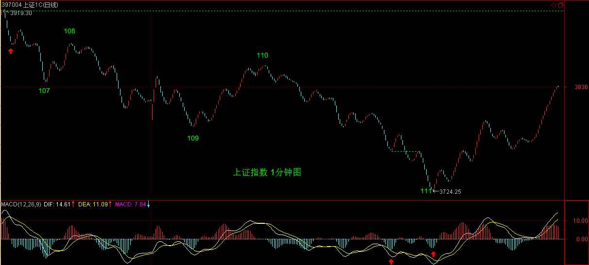
下图中110点的线段里的小顶背驰，111点的小底背驰，都是极端标准的。
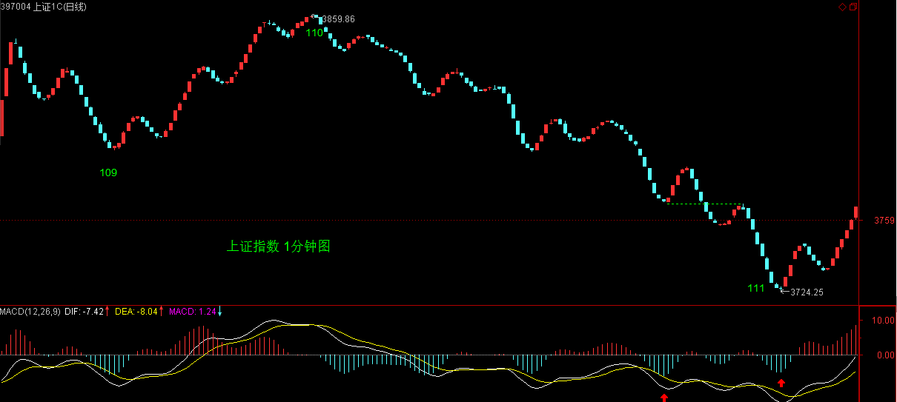
111点，看不明白的，看看MACD里那两个红箭头指着的绿柱子面积比。
如果还有人问，为什么前面的不是，就一定要把分型、笔、线段那课以及63那课好好看了。【韶山映山红】不知道这里跟分型、笔、线段那课以及63那课有什么关系。★这里问的其实是背了又背的问题，或者说，盘中一个回涨就化解了背驰的问题。可以做个专题，以后研究。】
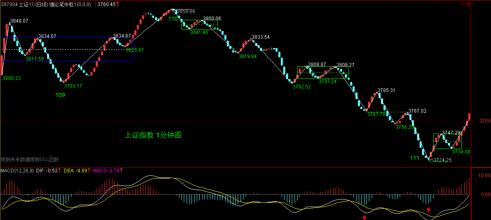
图中红箭头处，趁着现在1分钟图还能看到，请去好好研究那为什么是一笔，那底分型是怎么构成的，这都有最严格的标准。
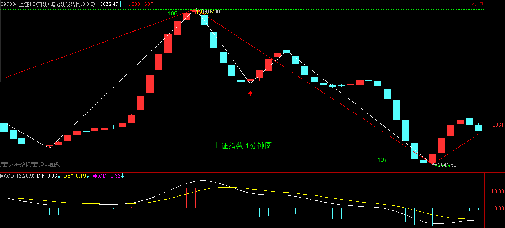
【韶山映山红】此处案发现场复原图的底分型和笔都没有什么悬念。缠师配图放大也看不真切细节，底分型处有些模糊。】
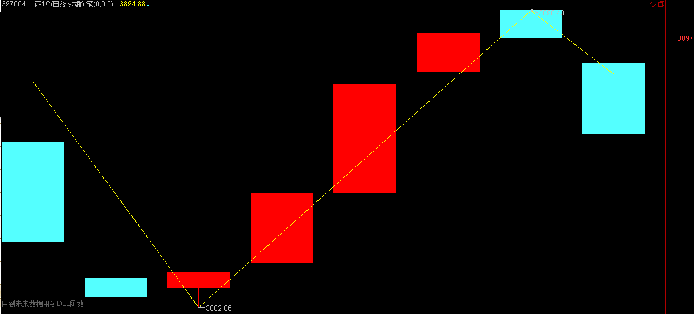
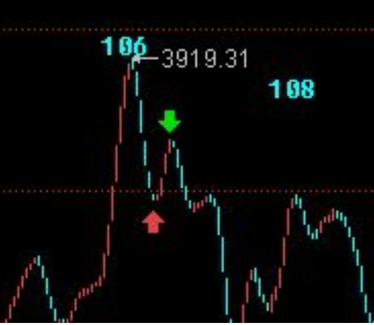
至于走势，没什么可说的，就是震荡，这里是本ID理论的天堂，如果说单边势傻瓜都能赚钱，那么这种市场，就不是一般人能把握的了。能把握，就有了一个好的吸血机器，练习好了，那算有点模样。
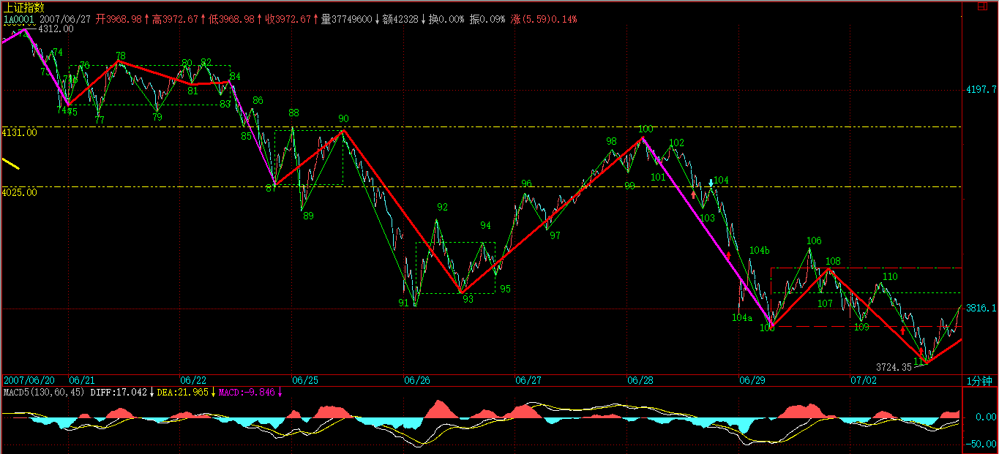
具体的中枢分析，本ID不准备说了，有这么明确的线段划分，按照递归定义，答案不难得到，如果这都不练习一下，那就没法学了。【韶山映山红】缠师第一部分的线段标注就在这一天的111结束了。实际上是学习走势类型划分的绝好实例。】
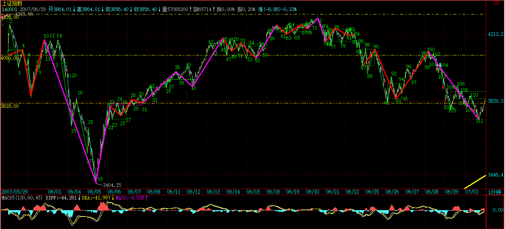
大的技术位，和周五说的没什么不同，唯一需要补充的，就是图中107这一点，如果能站稳，至少这中枢震荡是有保证的，上面还是3919点是第一压力，现在，等于成了一颈线位置了。【韶山映山红】这里说的是头肩底的颈线。111头，105左肩，颈线位置106是3919点。】
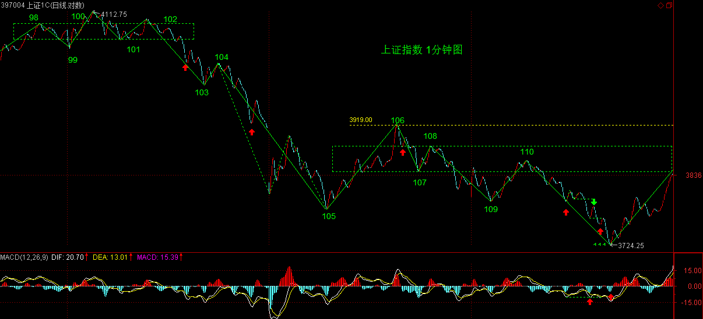
再上面，就是5周均线的位置。大图上说，今天是受到5月均线的支持产生的反弹，这线最重要，三角形还是平台型，就看这5月均线是否有效跌破了。
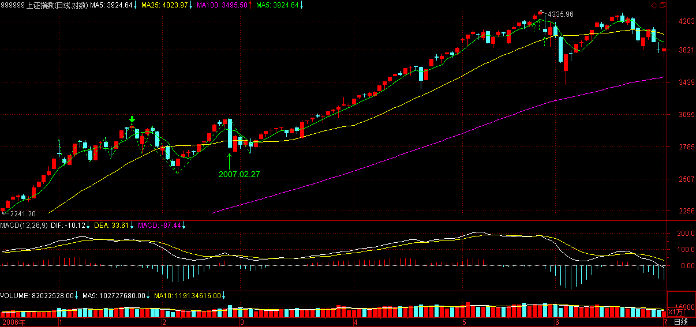
注意，再次强调，这种震荡行情，没什么基础的，最好就观望，半仓、空仓都无所谓，没这本事，就不一定玩这游戏，当然，如果你要学习，要练习，可以用少量资金。
对于初学者，震荡的原则就是，宁愿卖早，一定不卖晚，有钱，还怕买不到股票？
个股方面，本ID那些股票各位都知道，除了新进去的二、三只，本ID现在是在保持0成本赚筹码阶段，震荡幅度越大越高兴，技术不好的、心脏不好的，千万别参与，找些脾气好点的股票，本ID的股票，一般脾气都不大好。
先下，下午、晚上，忙，还要赶回北京。明天见。
【韶山映山红】20070702.jpg（2007-07-02 15:11）】
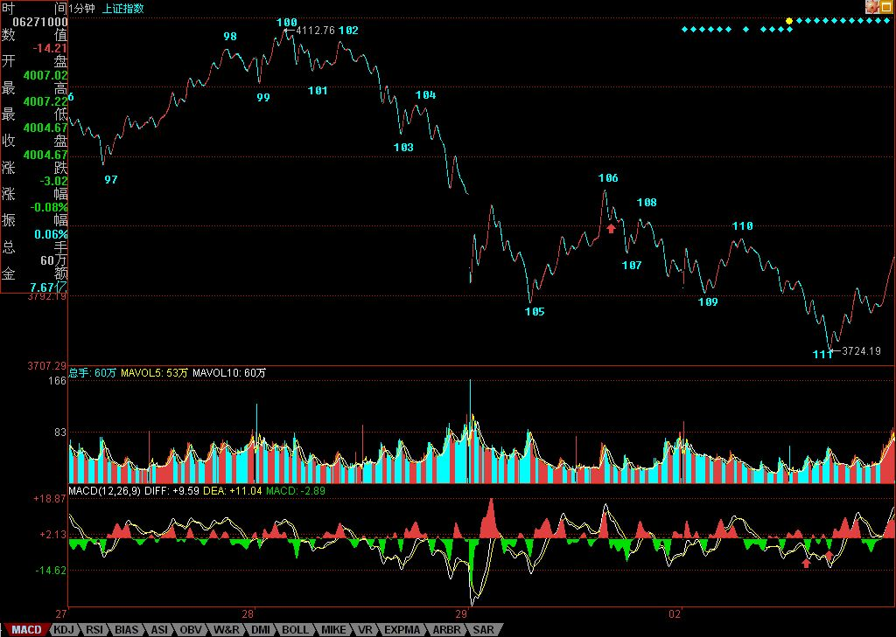
我认为108-109这一段中间的高点还值得研究研究。
大家可以看看，2007年7月2日9点33那个高点是3848.07,而之前最后一次反弹的起始点是2007年6月29日14点33的那个低点，点数是3848.63,如果按照整数位算的话，那就是相等了。而且无论是从2007年6月29日14点45到2007年7月2日9点33分这一段还是从2007年7月2日9点33分到109这一段都包含三笔，
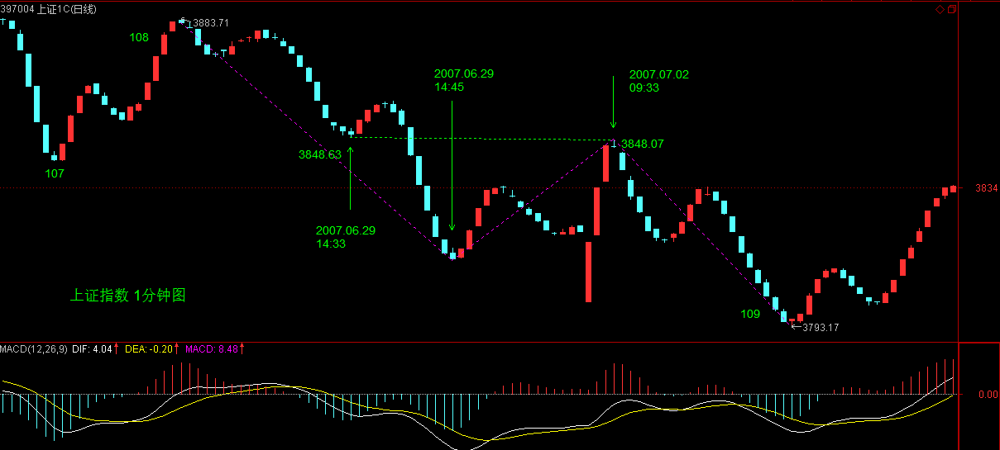
因此我认为108-109这一段里是可以从108到2007年6月29日14点45分，然后从2007年6月29日14点45到2007年7月2日9点33分，然后再从2007年7月2日9点33分大109分为三段的。
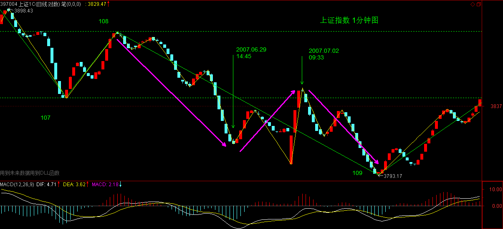
关键就在于是按整数看还是按小数看，按小数看就不算，按整数看就算。
大家可以讨论讨论。
2007-7-2 17:15
【韶山映山红】此处通达信现有的历史数据和当年显示的数据有出入，导致现在能够制作的K线图和当年的K线图不一致。可以放大缠中说禅博客原始配图大概的看一下。】
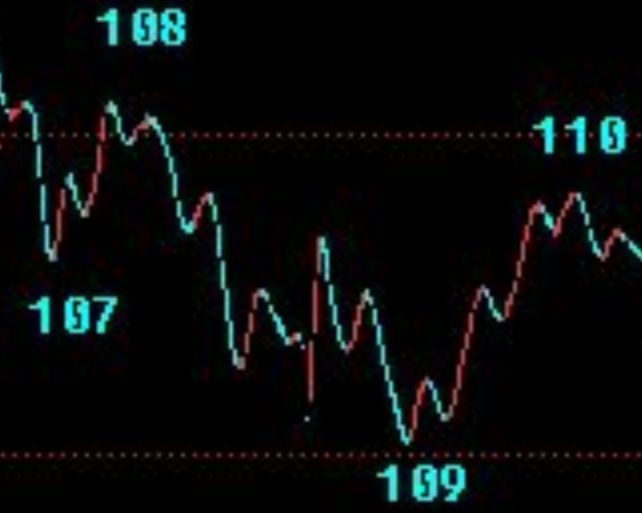
[匿名] 大盘 2007-07-02 16:42:05
在我的1分钟图上，如果严格来说，106-107之间红箭头所指的向上断不能算作一笔，因为只有4跟k线，中间缺乏上涨k线，
因此其实应该把106-109作为线段为好，这样1分钟中枢就是105-110的三个线段构成，
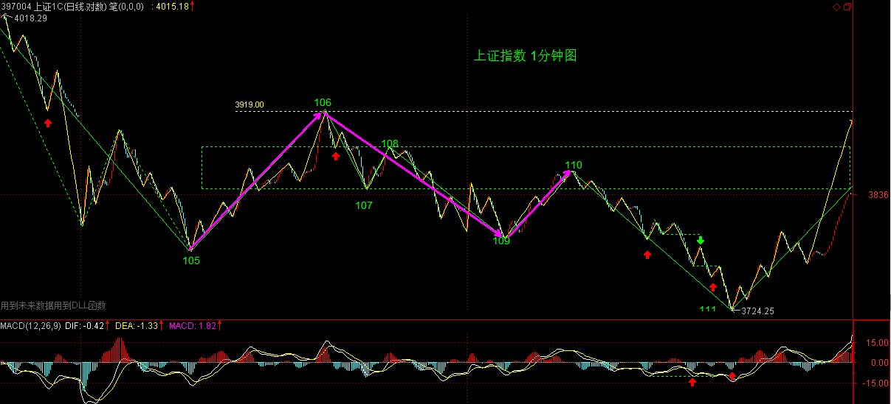
因此预计明天小幅低开或者高开后直接去冲击29日的下跌缺口，并震荡形成3买或者重新回到中枢，
------------
大盘是有道理的，事实上13点38和13点39那两根K线，13点38最低是3882.18而13点39最低是3882.17，因此13点39才是底，这样底到顶就的确只有四根K线，不算一笔的。
问题就在于，如果精确到整数那13点38就可以算底，这样就算一笔，否则精确到小数就不算一笔。
因此我认为如果精确到小数106到107确实不算一笔，精确到整数就算一笔。
大家再看看我上面的贴子，如果按整数来看，108到109中间也可以再分段的。
因此我认为，如果按整数分，必须把图中108到109也分为3段。
如果按小数，那就是大盘同学的分法。
缠姐认为呢？
2007-7-2 17:32
袖手旁观
[匿名] 大盘 2007-07-02 16:42:05
在我的1分钟图上，如果严格来说，106-107之间红箭头所指的向上断不能算作一笔，因为只有4跟k线，中间缺乏上涨k线，因此其实应该把106-109作为线段为好，这样1分钟中枢就是105-110的三个线段构成，因此预计明天小幅低开或者高开后直接去冲击29日的下跌缺口，并震荡形成3买或者重新回到中枢，
----------------------
4根阳K线后面还有第一根阴K线的高点更高。后面一段也一样。但是我觉得更重要的是108高点已经进入前面一段的内部结构，造成了破坏。
线段的划定，除了从分型、笔一层一层推导以外，还有很多因素需要灵活。不然跳空段更加不符合三笔的定义了。
2007-7-2 17:00
[匿名] 大盘 2007-07-02 16:42:05
在我的1分钟图上，如果严格来说，106-107之间红箭头所指的向上断不能算作一笔，因为只有4跟k线，中间缺乏上涨k线，因此其实应该把106-109作为线段为好，这样1分钟中枢就是105-110的三个线段构成，因此预计明天小幅低开或者高开后直接去冲击29日的下跌缺口，并震荡形成3买或者重新回到中枢，
----------------------
[匿名] 袖手旁观 2007-07-02 17:00:17
4根阳K线后面还有第一根阴K线的高点更高。后面一段也一样。但是我觉得更重要的是108高点已经进入前面一段的内部结构，造成了破坏。线段的划定，除了从分型、笔一层一层推导以外，还有很多因素需要灵活。不然跳空段更加不符合三笔的定义了。
-----------------
袖手旁观你错了，4根阳K线后的那根阴K线即13点43那根高点是3897.45,而前面一根阳K线即13点42那根高点是3898.44，不知道你的结论是怎么出来的。
不过我认为你说的破坏前一段很有道理，灵活应用也是必须的了，但这就不够严谨了。但是我觉得你的想法很好，大家可以探讨。最好缠姐可以给解答下。
2007-7-2 17:38
袖手旁观
快乐vs菜虫 2007-07-02 17:38:24
---------------------------------------
袖手旁观你错了，4根阳K线后的那根阴K线即13点43那根高点是3897.45,而前面一根阳K线即13点42那根高点是3898.44，不知道你的结论是怎么出来的。
不过我认为你说的破坏前一段很有道理，灵活应用也是必须的了，但这就不够严谨了。但是我觉得你的想法很好，大家可以探讨。最好缠姐可以给解答下。
————————————————————
对，是我看错了，一不留神看到107～108段中间去了。
2007-7-2 18:58
本课目录
教你炒股票63：替各位理理基本概念【网文】缠论的级别（一）：什么是级别，级别的逻辑和缠师的笔【网文】缠论的级别（二）：F级别逻辑和状态判断，同级别分解唯一性【网文】缠论的级别（三）：级别转折的判断与介入逻辑【网文】缠论的级别（四）：盘整、趋势和买卖点判断【网文】缠论的级别（五）：期货股票的区别与缠论均线系统的建立【网文】缠论的级别（番外篇）：1F 5F 30F的划分标准解盘：今天看不明白的都请严重补课。